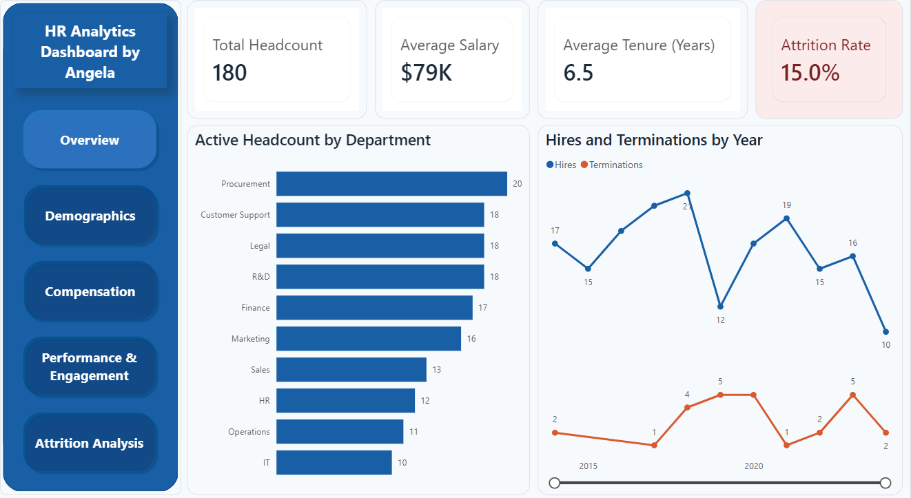
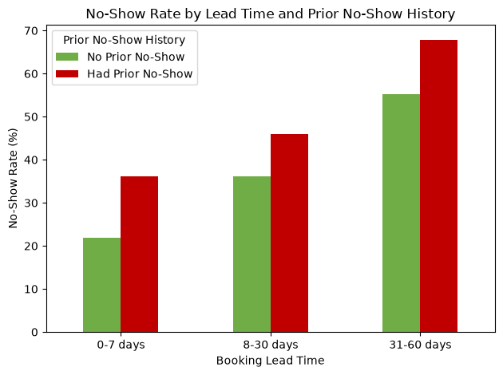
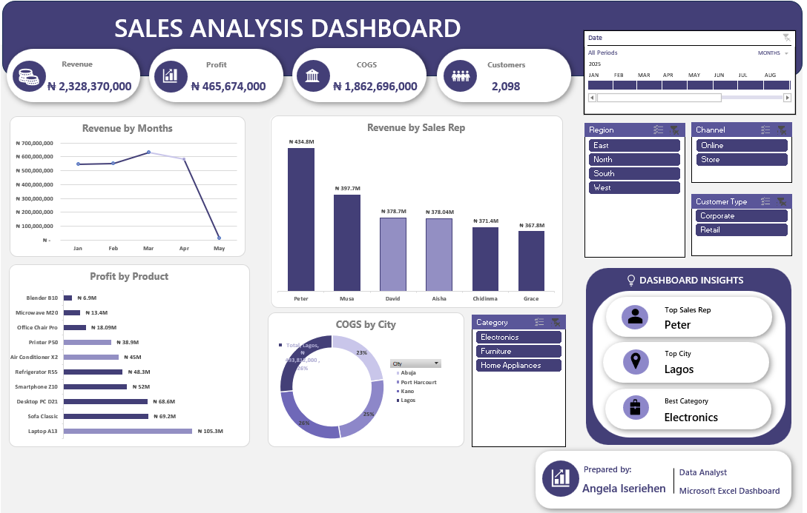

An end-to-end Power BI project built from a deliberately messy HR dataset. I cleaned the data in Power Query (removing duplicates, standardising department names, parsing dates in several formats and correcting salary errors), built a date table and DAX measures for headcount, attrition, salary, tenure and engagement, and designed a five-page interactive report covering Overview, Demographics, Compensation, Performance and Attrition.

A four-dashboard Power BI analysis of a 14-table logistics database covering trucking and freight operations from 2022 to 2024. The dashboards cover executive performance, commercial activity and fleet operations, and share one storyline: on-time delivery stayed flat at about 44.6% across 36 months. I defined revenue two ways, linehaul only and total billed including fuel surcharges and accessorial charges, and documented the difference. The fleet analysis also found that about 65% of trucks are from the 2015 model year, which points to an ageing-fleet risk.

A three-page Power BI dashboard built on the Sample Superstore dataset (2014-2017). It includes a sales and profit overview, a discount impact analysis, and an executive summary with business insights, supported by nine DAX measures, a date table with time intelligence, KPI cards and interactive slicers. The analysis found that Tables is the weakest sub-category, that orders with discounts above 20% average a loss, and that sales grew strongly from 2016 to 2017.

A multi-week analytics project for a fictional clinic, exploring how data could reduce missed patient appointments. Working in Jupyter with a 5,000-row, 18-column dataset, I assessed data quality, built KPIs and visualisations, and found that about 48.5% of appointments were no-shows. Booking lead time was the strongest predictor, and it compounds with a patient's history of previous no-shows, which I passed on as feature recommendations to a data science teammate.

A single-page Microsoft Excel dashboard that summarises sales performance at a glance: about ₦2.33 billion in revenue, ₦465.7 million in profit and 2,098 customers. It breaks revenue down by month and sales rep, profit by product and costs by city, with slicers for date, region, sales channel, customer type and product category. An insights panel highlights the top sales rep (Peter), the top city (Lagos) and the best category (Electronics).